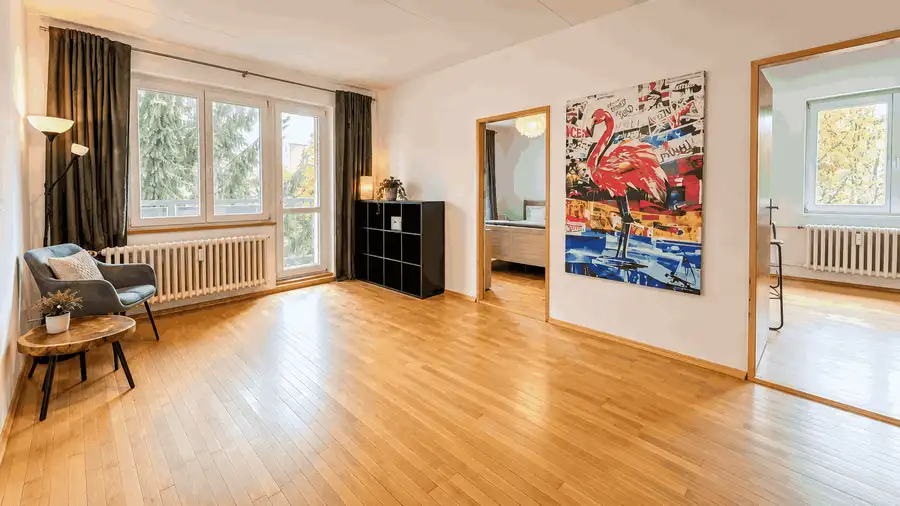
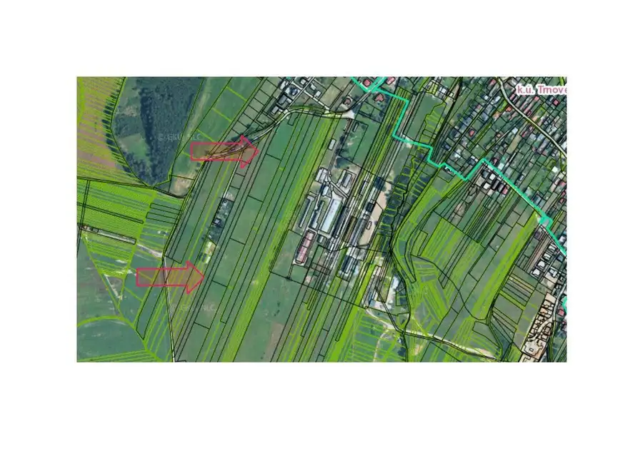
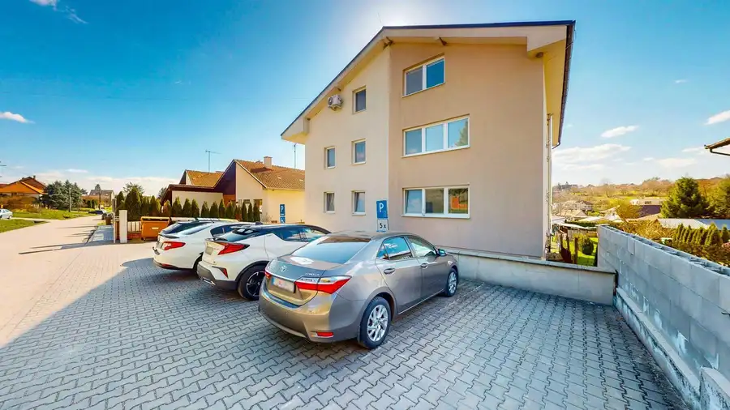

Pripravujeme - predaj : 3-izbový byt s balkónom | Fončorda | mládežnícka
Banská Bystrica

- Dispozícia3-izbový
- Plocha63 m²
- Poschodie4. z 4
- StavPôvodný stav
- VlastníctvoOsobné
O nehnuteľnosti
TARGETreal Vám ponúka na predaj 3-izbový byt v obľúbenej lokalite Fončorda v Banskej Bystrici, situovaný na Mládežníckej ulici.Byt sa nachádza na 4. poschodí bytového domu s výťahom a ponúka príjemnú juhozápadnú orientáciu, vďaka ktorej je počas dňa pekne presvetlený.Dispozične je byt riešený veľmi prakticky. Z obývacej izby sa vstupuje do dvoch samostatných spální, čo vytvára príjemné prepojenie dennej a nočnej časti bytu. K dispozícii je tiež balkón a pivnica.Byt je v pôvodnom, zachovalom stave, pričom veľkou výhodou je murované bytové jadro. Ponúka tak možnosť bývania ihneď alebo zároveň vytvára priestor na rekonštrukciu podľa vlastných predstáv.BYT:vyhľadávaná lokalita FončordaMládežnícka ulica3-izbová dispozícia63 m2 + balkón4. poschodie zo 4 poschodí s výťahombalkónmurovaná pivnicamurované jadrookná menené, drevené dvojsklopôvodný, zachovalý stavjuhozápadná orientáciaDISPOZÍCIA :Dispozične byt pozostáva zo vstupnej chodby, kuchyne, kúpeľne, samostatného WC, obývacej izby a dvoch spální. Po vstupe do bytu sa po ľavej strane nachádza murované bytové jadro, v ktorom je situovaná kúpeľňa a samostatné WC. Ďalej sa z chodby vstupuje do kuchyne a rovno do dennej časti bytu – obývacej izby. Z obývacej izby je priamy vstup na balkón a zároveň vstup do oboch spální.LOKALITA – FONČORDAFončorda patrí medzi vyhľadávané a obľúbené mestské časti Banskej Bystrice, najmä vďaka príjemnému prostrediu, kompletnej občianskej vybavenosti a dobrej dostupnosti do centra mesta.V bezprostrednom okolí sa nachádzajú obchody, supermarkety, školy, materské školy, zdravotnícke služby, lekárne, reštaurácie a ďalšie služby, ktoré zabezpečujú pohodlné každodenné bývanie bez potreby dlhého dochádzania.Výhodou lokality je aj dobrá dostupnosť mestskej hromadnej dopravy a rýchle spojenie s centrom Banskej Bystrice. Fončorda zároveň ponúka dostatok možností na aktívny oddych, prechádzky a športové vyžitie.Mládežnícka ulica sa nachádza v pokojnej časti Fončordy, pričom obyvatelia majú všetky dôležité služby a vybavenosť pohodlne dostupné v okolí. Lokalita tak ponúka praktické mestské bývanie s kompletným zázemím, vhodné pre rodiny, páry aj jednotlivcov.cena nehnuteľnosti : 185 tismesačné náklady : 180 eurv prípade záujmu ma prosím kontaktujte :ing. Natália Ďurišová, 0915774263, mail : natalia.durisova@targetreal.sk
Parametre
- Cena vrátane energií
- Nie
- Druh
- 3 izbový byt
- Dátum zverejnenia
- 08. 10. 2026
- Energie
- 180
- Orientácia
- Juhozápadná
- Podlažie
- 4
- Počet izieb / miestností
- 3
- Počet nadzemných podlaží
- 4
- Stav nehnuteľnosti
- Pôvodný stav
- Typ
- Predaj
- Typ konštrukcie
- Panelová
- Umiestnenie
- Posledné podlažie
- Vlastníctvo
- Osobné
- Vybavenie
- Balkón, Terasa, Výťah
- Vykurovanie
- Ústredné
- Úžitková plocha
- 63 m²
Kde to je


Mohlo by Vás zaujímať
 BytNové
127 500 €Rekreačná nehnuteľnosť v tesnej blízkosti Duchonky – 4-izbový byt s terasou
Prašice
4-izbový97 m²
BytNové
127 500 €Rekreačná nehnuteľnosť v tesnej blízkosti Duchonky – 4-izbový byt s terasou
Prašice
4-izbový97 m²

PozemokNové Cena na vyžádáníPREDAJ : pozemok určený v územnom pláne na výstavbu Žilina 6715 m²
BytNové Cena na vyžádáníPRENÁJOM : 4-izbový nezariadený byt s terasou a vlastným pozemkom v Prašiciach pri Duchonke Prašice 4-izbový92 m²1. podlažie